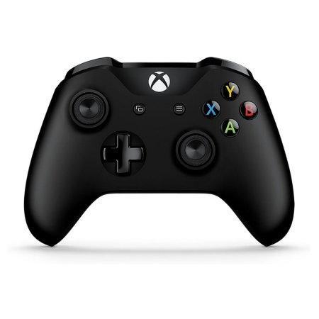

The primary PlayStation controller's basic appearance has survived with only minor changes since it accompanied the first console to the marketplace all the way back in 1994. Sony's persistence has resulted in a controller design which anyone familiar with a PlayStation pad since the mid-90s can pick up and be instantly at home with.Alongside its iconic "handlebar" shape, PlayStation controllers have also become known for their use of symbols to mark their face buttons in place of letters.


The DUALSHOCK®3 wireless controller for the PlayStation®3 system provides the most intuitive game play experience with pressure sensors in each action button and the inclusion of the highly sensitive SIXAXISTM motion sensing technology. DUALSHOCK®3 utilizes Bluetooth technology for wireless game play and the controller’s USB cable to seamlessly and automatically charge the controller through the PlayStation®3 at anytime.
The DualShock®4 Wireless Controller for PlayStation®4 defines this generation of play, combining revolutionary features and comfort with intuitive, precision controls. Evolved analog sticks and trigger buttons allow for unparalleled accuracy with every move while innovative technologies offer exciting ways to experience your games and share your greatest moments.
